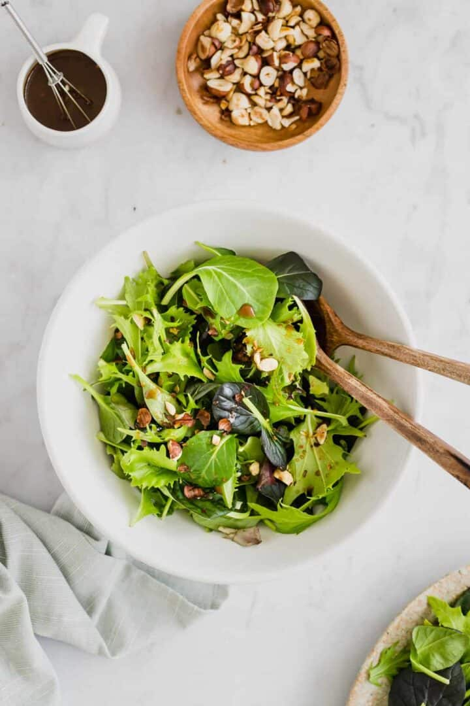

Mega Crunch Salad
Prep time:
6 mins
Price:
R78,75
Fresh,delicious and crunchy salad leaves with a sprinkle of balsamic vinegar and olive oil dressing.
Toasted hazelnuts,Cashew Nuts or Almond Nuts to provide an aromatic crunch.